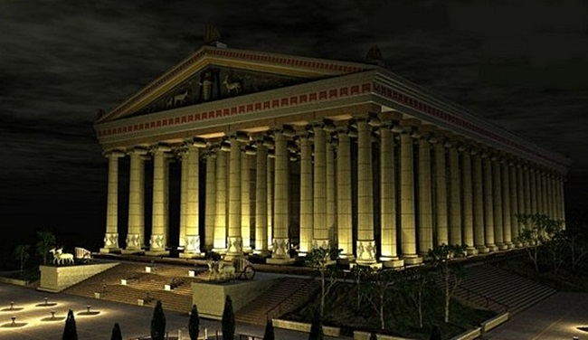

Єгипетська піраміда Хеопса
Найдавнішим з чудес світу і єдиним збереженим до наших днів, вважається піраміда Хеопса біля єгипетського міста Гіза. Ця гробниця досі вражає уяву своїми розмірами. Її висота становить майже 150 метрів, а довжина кожної сторони піраміди біля основи перевершує 220 метрів! Для будівництва піраміди знадобилося 2,3 мільйона кам'яних блоків, кожен з яких важить дві з половиною тонни. Яким чином була побудована піраміда Хеопса, до сих пір незрозуміло. Адже її спорудили приблизно в 2540 році до нашої ери!
Читайте також:"Піраміда Хеопса - перше з чудес Стародавнього світу".
Висячі сади Семіраміди

Сади неймовірної краси серед напівпустельного Вавилона були зведені царем Навуходоносором II в подарунок своїй дружині Амітіс. На голій піщаній рівнині була побудована піраміда форми, схожої на сходи. Кожен ярус був покритий родючим грунтом і засаджений різноманітними рослинами, які були настільки пишними, що звисали за межі самої піраміди і стін не було видно. З боку здавалося, що цей сад просто-напросто висить в повітрі. Сади Семіраміди були зведені приблизно в 605 році до нашої ери і до нашого часу, нажаль, не збереглися.
Читайте також:"Висячі сади Семіраміди - чудова інженерна споруда Навуходоносора".
Статуя Зевса в Олімпії

Статуя Зевса - єдине з 7 чудес світу, яке розташовувалося в материковій частині Європи в грецькому місті Олімпія. Статую спорудили в V столітті до нашої ери. Величезне уособлення Зевса прикрашало собою головний храм, побудований на честь цього бога. Розміри статуї захоплювали. Висота сидячого Зевса була близько 15 метрів. Складалося враження, що якби він захотів встати, то розніс би дах. Статуя була зроблена на дерев'яному каркасі, який був обшитий слоновою кісткою і інкрустований золотом. На початку V століття скульптуру Зевса перевезли до Константинополя. На жаль, статуя згоріла під час пожежі в 476 році.
Храм Артеміди в Ефесі
Розкішний храм в турецькому місті Ефес був в 550 році до нашоїпобудований ери на честь богині Артеміди. Красива будівля з білого каменю проіснувала всього близько двохсот років і в 356 році до нашої ери була спалена Геростратом, який вирішив прославитися таким способом. Незабаром після цього храм відновили в ще більш розкішному вигляді. Однак в III столітті він був остаточно знищений готами.
Мавзолей в Галікарнасі
Таке знайоме для нас слово "мавзолей" походить від імені карийского правителя Мавсола, для якого була побудована особливо розкішна усипальниця. Цю гробницю звели в середині IV століття до нашої ери в місті Галікарнас, який розташовувався на території теперішньої Туреччини. Величезна цегляна будівля мала в довжину 60 метрів і досягала висоти 46 метрів. Ззовні мавзолей був облицьований білим мармуром. Споруда простояла 19 століть і звалилася в XIII столітті від сильного землетрусу.
Колос Родоський
Статуя бога Геліоса на острові Родос була воістину колосальною. Її висота була близько 60 метрів, і, за свідченням сучасників, між ногами Колоса могли пропливати кораблі. Скульптура була зроблена з глини на металевому каркасі і обшита листами бронзи. Проіснувало ця чудо світу недовго. Всього через 65 років після зведення під час землетрусу статуя підломилася в області колін, і Колос звалився. Саме звідси походить вираз "Колос на глиняних ногах".
Александрійський маяк

Якщо всі попередні чудеса були побудовані з релігійних мотивів або щоб потішити самолюбство правителів, то Олександрійський маяк виконував дуже корисну функцію. Він був зведений в III столітті до нашої ери на острові Фарос біля єгипетського міста Александрія. Маяк служив відмінним орієнтиром для суден і допомагав минути рифи на шляху в александрійську бухту. Висота Александрійського маяка досягала 135 метрів, а світло від нього поширювалося більш ніж на 60 кілометрів. Маяк простояв майже тисячу років, але в 796 році був сильно пошкоджений землетрусом. Згодом араби, що прийшли до Єгипту, спорудили на місці маяка фортецю, яка стоїть донині.